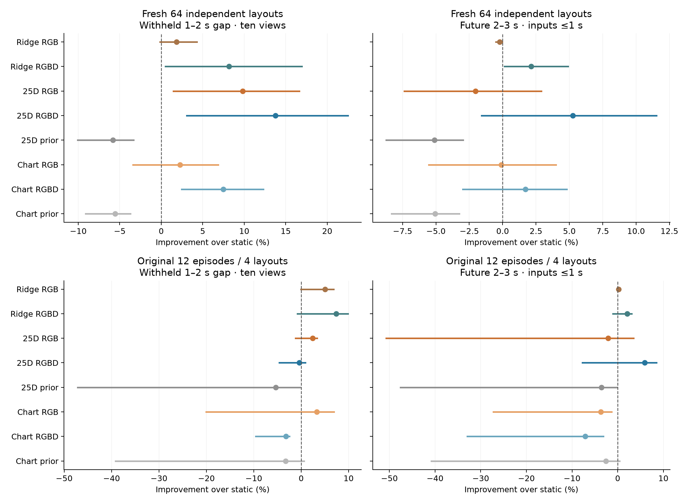
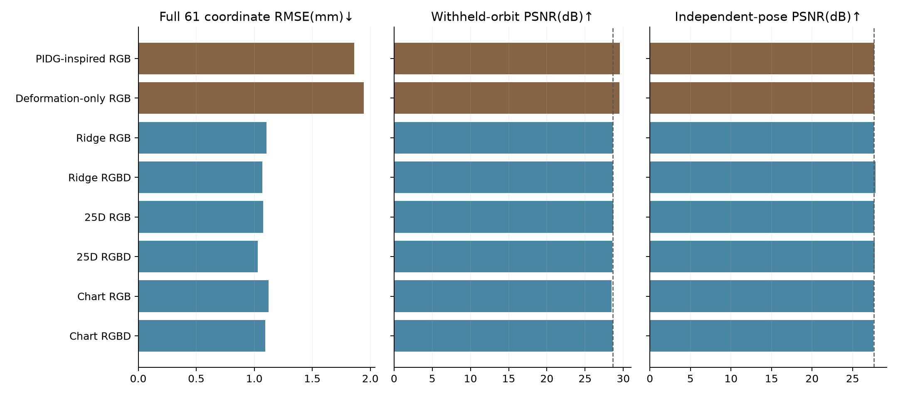
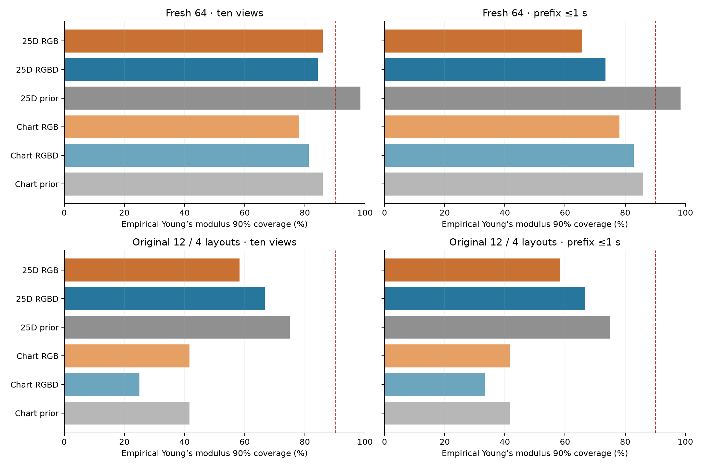
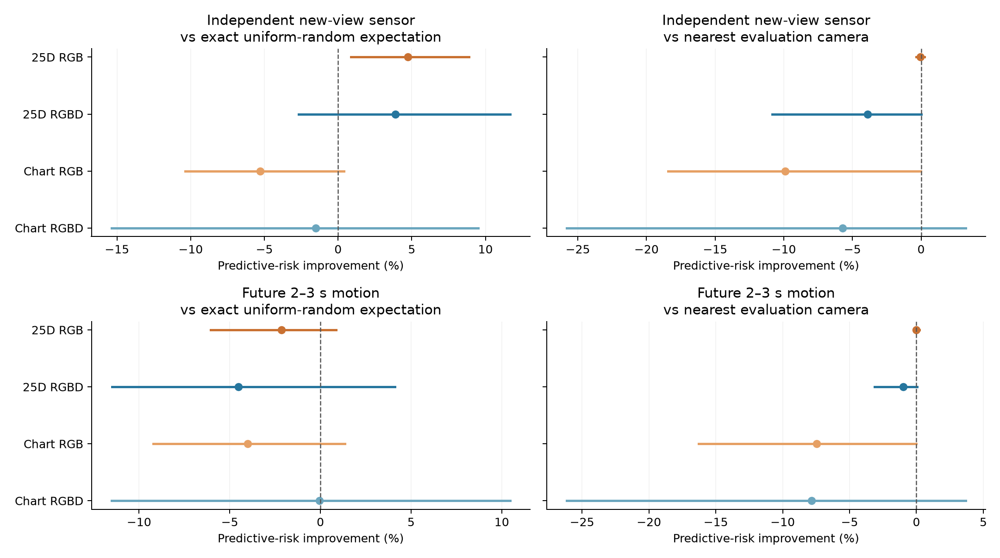
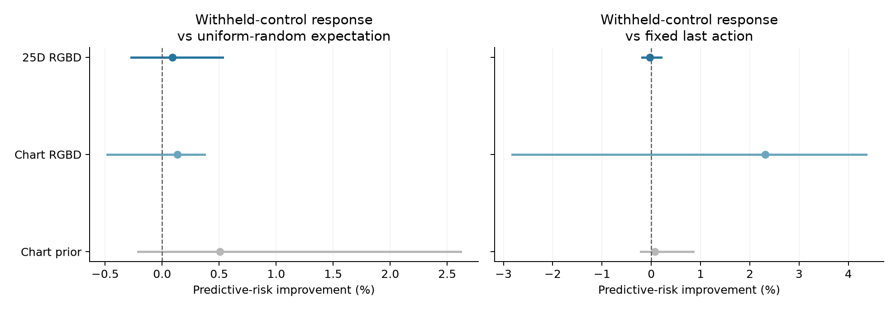

Sealed TEST evidence · 152 TRAIN / 44 VAL / 64 primary TEST layouts / 12 secondary TEST episodes
On 64 fresh TEST layouts, the 25D RGB and RGBD baselines reduce withheld-gap error by 9.8% and 13.8%. With a strict ≤1 s observation prefix, RGBD improves future prediction; RGB-only does not beat static. The structured chart makes physical hypotheses admissible but does not dominate the 25D or ridge baselines and does not calibrate material/force uncertainty. Predictive-risk camera selection does not beat the nearest-camera baseline consistently.
Checkpoint identities,128 posterior samples, input timestamps, comparison models and test episodes were frozen before each corresponding task's predictive TEST evaluation. Passive prediction/new-view inference and controlled probing have separate checkpoint seals; the controlled-response teacher was frozen separately before probe TEST scoring. No model or temperature was tuned on these results. Every episode has 61 simulation frames and a shared known cuboid reference with 455 nodes. The primary 64 fresh layouts are separate from the original 12 episodes, which contain only 4 layout groups × 3 material variants. All 272 dataset cases passed sensor/physics QA before test execution.
Interpolation uses ten public images at 0,.25,.5,.75,1,2,2.25,2.5,2.75 and 3 s, then predicts the withheld 1–2 s gap. Forecasting physically loads only images at or before 1 s and evaluates2–3s. Both use the same frozen neural Green decoder. RGBD explicitly uses measured depth; it is a separate track.

Coordinate RMSE averages the three coordinate errors before the square root, then averages episodes. Error bars are paired, unadjusted 95% layout-bootstrap intervals. Original material variants stay together; frames and nodes are not independent samples. Positive gains favor the model. Priors ignore video. Ridge is a separately sealed point predictor with modality/conditioning matched and no calibrated uncertainty.
| Model | Withheld gap RMSE(mm) | Future RMSE(mm) | Gap vs static | Future vs static |
|---|---|---|---|---|
| Static | 0.843 | 0.718 | — | — |
| Ridge RGB | 0.827 | 0.719 | +1.9% | -0.2% |
| Ridge RGBD | 0.774 | 0.702 | +8.2% | +2.1% |
| 25D RGB | 0.761 | 0.732 | +9.8% | -2.0% |
| 25D RGBD | 0.727 | 0.680 | +13.8% | +5.3% |
| 25D prior | 0.892 | 0.754 | -5.8% | -5.1% |
| Chart RGB | 0.824 | 0.718 | +2.2% | -0.1% |
| Chart RGBD | 0.780 | 0.705 | +7.5% | +1.7% |
| Chart prior | 0.890 | 0.754 | -5.6% | -5.1% |
| Model | Withheld gap RMSE(mm) | Future RMSE(mm) | Gap vs static | Future vs static |
|---|---|---|---|---|
| Static | 0.769 | 0.810 | — | — |
| Ridge RGB | 0.730 | 0.809 | +5.1% | +0.2% |
| Ridge RGBD | 0.712 | 0.794 | +7.4% | +2.1% |
| 25D RGB | 0.750 | 0.827 | +2.4% | -2.1% |
| 25D RGBD | 0.772 | 0.762 | -0.4% | +5.9% |
| 25D prior | 0.810 | 0.839 | -5.4% | -3.5% |
| Chart RGB | 0.744 | 0.840 | +3.3% | -3.7% |
| Chart RGBD | 0.794 | 0.868 | -3.2% | -7.1% |
| Chart prior | 0.794 | 0.831 | -3.3% | -2.6% |
| Model | Ten-view energy score(mm)↓ | Prefix energy score(mm)↓ | Ten-view coordinate90% coverage | Prefix coordinate90% coverage |
|---|---|---|---|---|
| Ridge RGB | 0.678 | 0.690 | point only | point only |
| Ridge RGBD | 0.648 | 0.673 | point only | point only |
| 25D RGB | 0.472 | 0.557 | 91.2% | 93.0% |
| 25D RGBD | 0.443 | 0.521 | 92.9% | 90.2% |
| 25D prior | 0.609 | 0.609 | 92.2% | 92.2% |
| Chart RGB | 0.519 | 0.548 | 91.9% | 91.6% |
| Chart RGBD | 0.484 | 0.523 | 91.5% | 90.6% |
| Chart prior | 0.608 | 0.608 | 92.1% | 92.1% |
Energy score is a proper distribution score on the fixed six-time/64-node normalized coordinate vector at 0.5,1,1.5,2,2.5,3 s, averaged by episode. This is a fixed-grid all-time score, including timestamps observed by the ten-view model, not a gap-only score. Ridge is treated as a point mass. Pointwise coverage uses all nondeterministic times and correlated coordinates; it does not establish physical calibration or simultaneous trajectory coverage.
Cases z0000,z0005,z0010,z0015 use identical known-rest crops, cameras, frozen TRAIN-only appearance calibration and rendering. Independent PIDG-inspired and deformation-only fits use ten public RGB observations, a fixed200-step budget and fixed seed; this is not an official PIDG reproduction or a claim of fully optimized published-method performance.

| Model | Full61 qRMSE(mm) | Strict gap qRMSE(mm) | Orbit PSNR(dB) | Independent-pose PSNR(dB) | Minimum tet volume ratio |
|---|---|---|---|---|---|
| PIDG-inspired RGB | 1.860 | 1.810 | 29.529 | 27.681 | 0.614 |
| Deformation-only RGB | 1.944 | 1.870 | 29.492 | 27.652 | 0.442 |
| Ridge RGB | 1.106 | 1.158 | 28.655 | 27.614 | 0.999 |
| Ridge RGBD | 1.071 | 1.150 | 28.605 | 27.824 | 0.798 |
| 25D RGB | 1.076 | 1.158 | 28.678 | 27.658 | 0.945 |
| 25D RGBD | 1.029 | 1.217 | 28.559 | 27.725 | 0.956 |
| Chart RGB | 1.123 | 1.277 | 28.479 | 27.602 | 0.970 |
| Chart RGBD | 1.093 | 1.200 | 28.647 | 27.596 | 0.973 |
Optimizing image error improves orbit PSNR while worsening mechanical predictions. PIDG-inspired RGB reaches29.529dB but1.860mm full61 error;25D RGB reaches28.678dB and1.076mm. On this four-case strict gap,25D RGB and ridge RGB are approximately tied with static, while RGBD25D is worse than static. These subset outcomes do not replace the primary 64-layout test.
The separately stored privileged true-motion render has29.189dB orbit and28.421dB independent-pose PSNR. PIDG-inspired orbit PSNR exceeds that shader diagnostic despite incorrect geometry, illustrating the simulator/Gaussian appearance mismatch. True motion is excluded from model fitting and the eight-method comparison.
The mean future gains have bootstrap intervals spanning zero: 25D RGBD 5.25% [−1.58,11.54]%, chart RGBD 1.70% [−2.99,4.82]%. They do not establish robust forecasting improvement.

Valid surface centers and force directions do not establish recovered mechanics. On primary TEST, the chart RGBD model has 81.25% Young’s-modulus coverage for nominal 90% intervals with ten views, BC classification 48.44%, and force classification 26.56%. Its force Brier score 0.763 remains worse than uniform 4-class 0.750. Secondary endpoint materials are substantially worse. Pointwise deformation coverage near 90% must not be substituted for physical-parameter calibration.
| Model | Inputs | E90% coverage | E MAE(kPa) | E width(kPa) | BC accuracy | Force accuracy | Force Brier↓ |
|---|---|---|---|---|---|---|---|
| 25D RGB | ten views | 85.9% | 4.93 | 17.29 | 39.1% | 18.8% | 0.821 |
| 25D RGBD | ten views | 84.4% | 4.65 | 18.21 | 45.3% | 31.2% | 0.793 |
| 25D prior | ten views | 98.4% | 5.34 | 20.14 | 25.0% | 25.0% | 0.750 |
| Chart RGB | ten views | 78.1% | 5.25 | 12.82 | 43.8% | 17.2% | 0.862 |
| Chart RGBD | ten views | 81.2% | 4.73 | 14.32 | 48.4% | 26.6% | 0.763 |
| Chart prior | ten views | 85.9% | 5.26 | 15.45 | 25.0% | 25.0% | 0.750 |
| 25D RGB | prefix | 65.6% | 5.57 | 10.46 | 34.4% | 25.0% | 0.831 |
| 25D RGBD | prefix | 73.4% | 5.25 | 13.71 | 32.8% | 23.4% | 0.934 |
| 25D prior | prefix | 98.4% | 5.34 | 20.14 | 25.0% | 25.0% | 0.750 |
| Chart RGB | prefix | 78.1% | 5.48 | 12.64 | 31.2% | 23.4% | 0.843 |
| Chart RGBD | prefix | 82.8% | 4.62 | 14.59 | 48.4% | 31.2% | 0.771 |
| Chart prior | prefix | 85.9% | 5.26 | 15.45 | 25.0% | 25.0% | 0.750 |
| Model | Inputs | E90% coverage | E MAE(kPa) | E width(kPa) | BC accuracy | Force accuracy | Force Brier↓ |
|---|---|---|---|---|---|---|---|
| 25D RGB | ten views | 58.3% | 6.34 | 16.16 | 41.7% | 8.3% | 0.931 |
| 25D RGBD | ten views | 66.7% | 6.40 | 14.55 | 41.7% | 0.0% | 1.143 |
| 25D prior | ten views | 75.0% | 6.40 | 20.16 | 25.0% | 25.0% | 0.750 |
| Chart RGB | ten views | 41.7% | 6.56 | 10.99 | 25.0% | 0.0% | 1.045 |
| Chart RGBD | ten views | 25.0% | 7.06 | 11.86 | 41.7% | 0.0% | 1.027 |
| Chart prior | ten views | 41.7% | 6.28 | 15.36 | 25.0% | 25.0% | 0.750 |
| 25D RGB | prefix | 58.3% | 6.64 | 10.11 | 25.0% | 8.3% | 0.938 |
| 25D RGBD | prefix | 66.7% | 6.08 | 12.88 | 58.3% | 8.3% | 1.140 |
| 25D prior | prefix | 75.0% | 6.40 | 20.16 | 25.0% | 25.0% | 0.750 |
| Chart RGB | prefix | 41.7% | 6.70 | 10.37 | 41.7% | 0.0% | 1.012 |
| Chart RGBD | prefix | 33.3% | 6.91 | 11.36 | 75.0% | 0.0% | 1.014 |
| Chart prior | prefix | 41.7% | 6.28 | 15.36 | 25.0% | 25.0% | 0.750 |
In a quasi-static regime, an unknown force magnitude and stiffness can compensate for one another. Dynamics and known controlled excitation can add information, but motion agreement alone cannot verify the inferred material or supports. This experiment retains both plausible multimodality and substantial model error; it does not demonstrate a calibrated Bayesian inverse solution.
The chart uses 16 intrinsic coefficients and discrete BC/load/face categories. It restricts centers to known cuboid faces, force families to their declared directions, and amplitudes/materials to declared ranges. Inactive coordinates are nuisance variables; finite-face clipping is noninvertible. Its density is intrinsic, not a 25D physical Lebesgue density. It is specific to this cuboid and does not establish arbitrary COLMAP geometry or generalized 3D boundary fields.
Each of 16 held-out layouts supplies a ≤1 s prefix, one acquired view at 1.5 s, and an independent evaluation camera. Candidate poses render the same object state. RGB uses silhouette support measurements in pixels; RGBD uses range measurements in metres. The policy is committed before its outcome is revealed. Uniform-random expectation evaluates all four possible one-view choices with equal weight; nearest camera and maximum observation variance are strong controls.

Paired95% bootstrap intervals use 16 independent layouts. Improvement against passive alone cannot establish a superior acquisition policy. RGB and RGBD sensor values have different units and are never pooled.
| Model | Unit | No new view | Predictive risk | Uniform random expected | Fixed0 | Nearest camera | Max variance |
|---|---|---|---|---|---|---|---|
| 25D RGB | pixels | 1.065 | 0.844 | 0.886 | 0.934 | 0.843 | 0.851 |
| 25D RGBD | mm | 0.965 | 0.714 | 0.743 | 0.807 | 0.687 | 0.715 |
| Chart RGB | pixels | 0.999 | 0.912 | 0.866 | 0.877 | 0.830 | 0.883 |
| Chart RGBD | mm | 0.985 | 0.716 | 0.705 | 0.794 | 0.677 | 0.649 |
| Model | Unit | No new view | Predictive risk | Uniform random expected | Fixed0 | Nearest camera | Max variance |
|---|---|---|---|---|---|---|---|
| 25D RGB | mm | 1.010 | 0.989 | 0.968 | 0.958 | 0.988 | 0.946 |
| 25D RGBD | mm | 0.941 | 0.985 | 0.942 | 0.898 | 0.975 | 0.985 |
| Chart RGB | mm | 0.971 | 1.022 | 0.982 | 0.945 | 0.951 | 0.972 |
| Chart RGBD | mm | 0.945 | 0.891 | 0.891 | 0.951 | 0.827 | 0.842 |
Extra observations often reduce independent-view error. Predictive-risk selection improves on uniform-random expectation only for the 25D variants in this experiment, and neither establishes an advantage over nearest-evaluation-camera selection. The chart variants are worse than random expectation on the primary sensor target. Future-motion results also do not demonstrate consistent policy superiority.
Eight held-out layouts compare one uncertainty-selected reset probe with exact uniform-random expectation, fixed first/last actions and maximum observation variance. The target is an independent withheld-control trajectory. A separately trained controlled teacher is used only for controlled queries; it does not replace the passive decoder.

| Model | No probe | Predictive risk | Uniform random expected | Fixed first | Fixed last | Max variance |
|---|---|---|---|---|---|---|
| 25D RGBD | 0.681 | 0.623 | 0.624 | 0.625 | 0.623 | 0.625 |
| Chart RGBD | 0.647 | 0.657 | 0.658 | 0.648 | 0.673 | 0.643 |
| Chart prior | 0.683 | 0.559 | 0.562 | 0.563 | 0.560 | 0.560 |
Entries are mean withheld-control coordinate RMSE in mm. Force interventions repeat the same supports and original hardware after reset. Conservative working likelihood parameters were frozen on reserved TRAIN intervention cases, including censored visibility and range returns; they do not guarantee physical posterior calibration.
| Model | Policy | E90% coverage | E interval width(kPa) | E median MAE(kPa) |
|---|---|---|---|---|
| 25D RGBD | passive | 87.5% | 19.31 | 4.33 |
| 25D RGBD | predictive_risk | 62.5% | 15.88 | 4.89 |
| 25D RGBD | random_expected | 71.9% | 17.36 | 4.44 |
| 25D RGBD | fixed_last | 62.5% | 16.60 | 4.47 |
| Chart RGBD | passive | 87.5% | 14.36 | 4.48 |
| Chart RGBD | predictive_risk | 75.0% | 14.10 | 5.26 |
| Chart RGBD | random_expected | 81.2% | 14.21 | 4.83 |
| Chart RGBD | fixed_last | 62.5% | 13.52 | 5.64 |
| Chart prior | passive | 100.0% | 15.46 | 3.69 |
| Chart prior | predictive_risk | 87.5% | 13.44 | 2.91 |
| Chart prior | random_expected | 84.4% | 14.07 | 3.12 |
| Chart prior | fixed_last | 75.0% | 13.81 | 3.10 |
Weighted quantiles use the inverse empirical CDF, preserving zero-mass gaps. Random expectation averages coverage/width over the four possible actions, not quantiles of an invented mixed posterior. Eight layouts provide very limited calibration evidence; narrowing an interval is not evidence of correct uncertainty.
For 25D RGBD, one selected poke reduces Young’s-modulus 90% coverage from 87.5% to 62.5% and raises median-estimate MAE from 4.33 to 4.89 kPa while mean interval width shrinks from 19.31 to 15.88 kPa. This is a failed physical-uncertainty update despite lower response-prediction error.
The prior-plus-poke variant improves mean control-response prediction by about18% over its passive prior, but the fixed-last action nearly ties it. The25D RGBD policy also nearly ties fixed-last. Chart RGBD becomes worse than its passive prediction. These results do not establish a novel active-selection advantage.
Four original VAL layouts (e0002,e0005,e0008,e0015) were used for this diagnostic. These results do not count as held-out TEST evidence. The target is a separate withheld-control trajectory after one independent reset probe, using the explicitly controlled neural teacher.
| Model | No probe | Predictive risk | Uniform random expected | Fixed first | Fixed last | Max variance |
|---|---|---|---|---|---|---|
| 25D RGBD | 0.692 | 0.620 | 0.613 | 0.602 | 0.620 | 0.603 |
| Chart RGBD | 0.567 | 0.631 | 0.631 | 0.762 | 0.638 | 0.638 |
| Chart prior | 0.610 | 0.560 | 0.572 | 0.593 | 0.536 | 0.565 |
Entries are mean withheld-control coordinate RMSE in mm. Force interventions repeat the same supports and original hardware after reset. Conservative working likelihood parameters were frozen on reserved TRAIN intervention cases, including censored visibility and range returns; they do not guarantee physical posterior calibration.
The working covariance used four reserved TRAIN cases / sixteen sequences, marginal range standard deviation 2.05mm and 99.48% empirical coverage of jointly valid TRAIN-calibration returns. This is conservative likelihood calibration, not a TEST or physical-parameter coverage guarantee.
| Model | VAL gap(mm) | Fresh TEST gap(mm) | VAL future(mm) | Fresh TEST future(mm) |
|---|---|---|---|---|
| Ridge RGB | 1.208 | 0.827 | 1.372 | 0.719 |
| Ridge RGBD | 1.033 | 0.774 | 1.351 | 0.702 |
| 25D RGB | 1.074 | 0.761 | 1.394 | 0.732 |
| 25D RGBD | 1.042 | 0.727 | 1.391 | 0.680 |
| 25D prior | 1.305 | 0.892 | 1.435 | 0.754 |
| Chart RGB | 1.154 | 0.824 | 1.380 | 0.718 |
| Chart RGBD | 1.102 | 0.780 | 1.332 | 0.705 |
| Chart prior | 1.268 | 0.890 | 1.412 | 0.754 |
VAL contains 32 fresh layouts plus 12 original episodes; its material mixture differs from primary TEST. It selected checkpoints. The chart additionally trains with 50% exact ≤1 s prefixes;25D retains original random-frame-dropout training. Differences cannot be assigned solely to the chart parameterization. Texture-feature and CE-weight sweeps were preserved as mixed/negative development results and were not tuned after test sealing.
Download MP4 · Source timestamps and SHA manifest
Download MP4 · Source timestamps and SHA manifest
Runtime inference uses an observation encoder, conditional flow and neural trajectory operator; no FEM or per-video optimization is used by these amortized models. TRAIN/VAL mechanical labels supervise learning; runtime observations use public RGB/masks/cameras, known reference geometry, and depth only in RGBD. Oracle geometry was used in declared TRAIN/VAL appearance calibration and renderer-ceiling diagnostics, and in a separately stored privileged four-case TEST true-motion shader diagnostic, which is not a ceiling because fitted incorrect geometry can score higher. It was never an input to the real predictive methods.
This study uses a supplied cuboid mesh, cameras and foreground masks, a rest initial state with zero velocity, and a three-second trajectory horizon. Material uncertainty concerns four spatially homogeneous scalar parameters: Young’s modulus, density, Poisson ratio and drag; no heterogeneous material field is inferred. Probe hardware inserts common additional constraints/load handles and is represented through the separate controlled-response model, rather than a fully general boundary-conditioning architecture.
The matched fixed-budget scene-specific image comparison is included above. Its optimizer budget does not establish published PIDG convergence. Controlled-query results are not silently replaced by the passive neural teacher or by development-only results. No official PIDG reproduction claim is made.
Complete machine-readable metrics and artifact hashes · Passive/new-view checkpoint seal · Separate controlled-probe checkpoint seal · Passive plot PDF · Material plot PDF · Active-view plot PDF
Protocol SHA 4d6149df81801fab4cddd752b43e0ff251cc66761f0c7e3ee7d2e485955d725d. Controlled-probe protocol SHA 35d8791d39e115f7964d950d702bc2e1e26bfbdec0b27b9ff15a365bfa5084e7. This report is a result summary, not a claim that the research objective of calibrated physical inference and superior active probing has been solved.